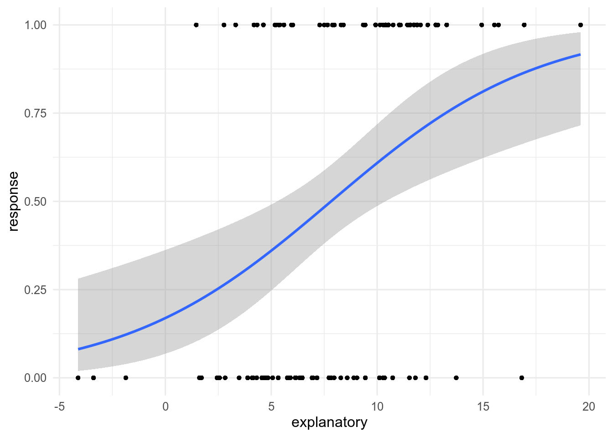
8 Binomial generalized linear models
Before you start
Before reading this page, you should be comfortable with basic statistical theory, using R, continuous and categorical data, and linear models.
You should also review the basics of the Binomial distribution here. EGS: ADD LINK.
8.1 Introduction
In this section, we will look at how we can use a Binomial Generalized Linear Model (GLM) to analyze data with a binary response and numeric explanatory variables.
On this page, we focus on one particular type of GLM, the Binomial GLM. The Binomial GLM fits a non-linear line to:
estimate a relationship between \(X\) and \(Y\), where \(Y\) comes from binary trials and is therefore bounded between 0 and 1.
predict change in \(Y\) from change in \(X\).
But unlike a linear model, the Binomial GLM does not do this with a straight line (on the scale of the data). The Binomial GLM fits a curved line bounded between 0 and 1 on the y-axis. This is because the Binomial GLM (also called a logistic regression - more on why later), the response data are the result of binary trials e.g Yes or No, anything with only two outcomes. But it can represent the result of single trials or many e.g. did an individual survive or die (1 trial), or the proportion of survivors from a population of 10 (10 trials). The \(Y\) values can only take values between 0 or 1 (either 0 and 1 themselves or proportions e.g. 0.1).
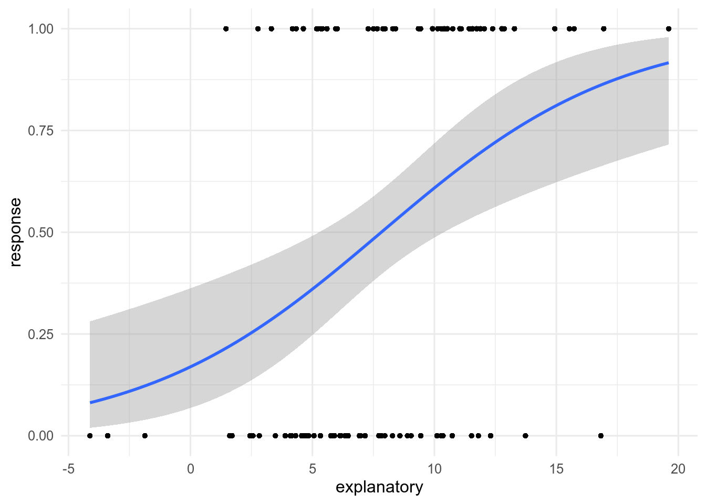
A large number of the models that are used in biological research are GLMs. This is because a lot of biological data would not meet the assumptions required for a linear model, for example survival data, occupancy data, or presence of a particular gene are all examples of binary responses.
As a result of their wide usage, GLMs are a key part of modern quantitative biology!
8.2 Which questions?
Example questions that can be answered with the Binomial GLM:
Inference
- How does body weight (kg) influence survival probability of sparrows?
- How does forest cover (type) affect the occurrence probability of a plant species?
Prediction
- What is the mortality of beetles exposed to different concentrations of carbon disulfide \(CS_2\)?
8.3 Type of data
8.3.1 Theory
As mentioned above, in a Binomial GLM the response data are always the result of binary trials. The values of the response variable should have either only two outcomes or be the result of many trials (a number of successes and number of failures or a proportion). Examples of this type of data would be:
- Number that survived and number that died
- Present/absent
- Yes/no
- On/off
- Proportion of seedlings that germinated
Just as was stated for the linear models, always remember to check that the way your variables are classified in R is the same as the format you expect.
In this case, there are several options that will work. The response variable \(Y\) can be stored as a factor, an integer, or as a continuous numeric variable.
8.3.2 Worked example
For this worked example, we will try to find out if/how body weight (kg) influences the survival probability of Soay sheep.
Biologically, it is expected that smaller sheep would find it harder to survive harsh winters as they have fewer reserves (such as body fat) than larger sheep.
8.3.2.1 Introduction to the data
This data for this example are from 1986 to 1996 for a population of Soay sheep from the St. Kilda islands in Scotland, UK.
They have been monitored following a standardised protocol since 1985. Each year the sheep are caught, weighed, and the population size is counted. Information on the project can be found here. These data are open source and can be found in the appendix of this paper EGS: CITE COULSON 2012.
The data consists of five variables:
- Year - year of recording
- Age - age of the sheep in years
- Survival - whether the sheep survived until the next year or not
- Weight - weight in kg
- Population size (PopSize) - number of females counted that year
sheep_data# A tibble: 1,328 × 5
Year Age Survival Weight PopSize
<dbl> <dbl> <dbl> <dbl> <dbl>
1 1987 11 1 26.5 331
2 1988 12 0 27.2 457
3 1987 10 1 26 331
4 1988 11 0 26 457
5 1986 8 1 26.7 211
6 1987 9 0 24 331
7 1986 8 1 26.5 211
8 1987 9 1 25 331
9 1988 10 0 23.2 457
10 1988 10 0 22.2 457
# … with 1,318 more rowsAll measures are for female sheep only.
You can find the data here if you want to follow along with the example. It is a .csv file with column headings.
To begin the analysis, let us first have a look at the data after it has been imported. We do this by looking at the raw data and making a plot. It can be easier to see the data if we jitter it because many data points sit on top of each other.
EGS: NEED TO ADD LINE TO READ IN DATA YOU CAN GET IT FROM THE PAPER LINK ABOVE THEN HOST IT.
plot1 <- ggplot(sheep_data, aes(x = Weight, y = Survival))+
geom_point(colour = "grey70", size = 2, alpha = 0.25)+
labs(x = "Weight of sheep (kg)",
y = "Survival of sheep",
tag = "a")
plot2 <- ggplot(sheep_data, aes(x = Weight, y = Survival))+
geom_jitter(colour = "grey70", size = 2, height = 0.1, alpha = 0.25)+
labs(x = "Weight of sheep (kg)",
y = "Survival of sheep",
tag = "b")
plot1 + plot2 + plot_layout(nrow = 1)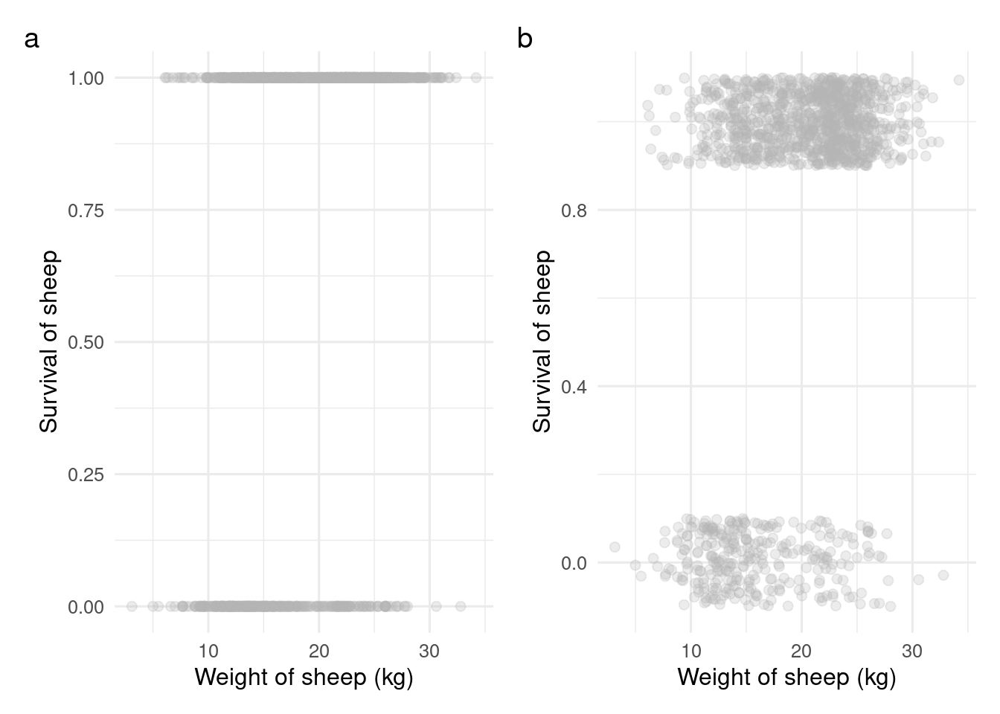
Since we are interested in whether weight (kg) influences the survival of sheep, we will need two of the five variables in the data: Weight and Survival. We will not need Year, PopSize and Age.
The response variable then is Survival, which is a binary variable (it has two outcomes 0/1). The explanatory variable is Weight, which is continuous numeric.
8.4 Model details
8.4.1 Theory
A Binomial GLM is just like all other statistical models, it aims to represent mathematically how the data that are being modelled were generated. In this case, it is assumed that the data were generated by a Binomial distribution and influenced by a relationship with some explanatory variables.
The sections below detail the three components of a GLM and describe what form they take for the Binomial GLM:
- The systematic part: \(\alpha\) + \(\beta\)\(X_i\)
- The random part: the distribution of the error
- The link function: that links them together
In it looks like this:
glm(y ~ x, data, family = binomial(link = "logit"))
there are more details below in the fitting the model in section.
The systematic part
This is the part of the model that is hopefully the most familiar, it is a linear equation just like those used in linear models.
This is also known as the linear predictor, \(\eta\).
An example is \(\eta\) = \(\alpha + \beta_1 X_{1} + \beta_2 X_{2}\)
where \(\alpha\) = an intercept, and the \(\beta\) values represent the change in \(\eta\) with every unit change of \(X\).
In this is written as y ~ x.
The random part
This part of the model represents the spread of the actual data points around the linear predictor. This random part is how we deal with the errors (residuals) of the model \(\varepsilon\). In linear models, this part was assumed to be Normal. In a Binomial GLM, it is assumed to be Binomially distributed (the clue is in the name).
The Binomial distribution is used to represent the number of successes (\(r\)) from a number of independent trials (\(N\)) when the probability of success (\(p\)) is the same for each trial. We use it for data from binary trials.
The Binomial distribution has two parameters \(N\) and \(p\). Usually, \(N\) is known (it comes from the data), so there is only one unknown parameter that must be estimated. That is \(p\).
In the random part of the GLM is specified by the family argument for a Binomial GLM it is family = binomial.
The Link function
The link function transforms the systematic part of the model onto the scale of data (called the response scale), connecting it to the random part.
This step is necessary because the model is non-linear. If you were to directly estimate \(Y\) (the response data) with a linear predictor as you do in a linear model, this would give a straight line. The straight line would not be bounded and could therefore predict values of \(Y\) above 1 or below 0, which does not make any sense.
Instead, the Binomial GLM links the estimate from the linear predictor to \(Y\) via a link function.
The default link function, or canonical function, for a Binomial distribution is the logit function (hence the alternative name of logistic regression). So, in a Binomial GLM the logit of the linear predictor is linked to \(Y\) instead of the linear predictor itself.
In the link is specified within the family argument, but with an extra argument called link. For a Binomial GLM with a logit link it is family = binomial(link = logit).
Using the logit link converts a probability to a log-odds. The log-odds is the natural logarithm of the odds ratio: \[\frac{p}{1-p}\]. Where \(p\) = the probability of an event occurring.
The odds ratio is the probability of a event occurring (\(p\)) over the probability it doesn’t occur (\(1-p\)). Odds are often used in the things like betting, e.g. to represent the odds of a particular horse winning a race. An odds ratio of 10:1 means that the companies assume that for every 10 successes (for the company i.e. a horse loses and they keep the money) there will be 1 failure (the horse wins and the company has to pay).
The logit link takes the following form:
\[ \begin{aligned} \mu = log(\frac{p}{1-p}) \end{aligned} \]
Where \(\mu\) = the log-odds, which is the output of the model.
The inverse of the logit link is:
\[ \begin{aligned} p = \frac{e^{\mu}}{1+e^{\mu}} \end{aligned} \]
OR
\[ \begin{aligned} p = \frac{1}{1+e^{-\mu}} \end{aligned} \]
Where \(p\) = the probability of success.
Here \(\mu\) is on the link scale and \(p\) is on the response scale (the scale of the response variable).
Other possible link functions for a Binomial GLM are the probit and cloglog functions.
For more informationclick here
The Probit link
One way of thinking of binomial problems is as a threshold:
e.g. imagine you have a dam, and if the water is too high, it will flow over the dam.
Therefore a model is needed that can capture when the dam overflows (it either does or does not). What is observed, and modelled, is whether the water was too high, or not. But, hidden underneath this is a variable of water height, which is not observed. But it is water height that controls if the dam overflows or not. An unobserved variable like this is called a latent variable.
This idea can be used in the modeling. If the water height was observed, it could be modelled with a simple linear regression of water height against rainfall, and assume the residuals are normally distributed. But, if only data on whether this value is above a certain threshold, or not is available. It turns out that this is the same as a Binomial GLM with a probit link!
Mathematically the model is \(Y_i = 1\) if \(\mu_i > 0\), where \(\mu_i\) is the latent variable.
The threshold idea can be useful for interpreting models: if you think there is some unobserved variable that causes the binary response when it is above a threshold, it can be easier to understand the process.
In practice the estimates from the probit and logit link functions give almost the same results, even though they have different interpretations.
The probit uses an inverse normal link function where a higher mean = higher probability of success.
Use when you want a threshold model because you have an unobserved variable that causes a binary response.
cloglog
Using a cloglog link allows binary data to be linked to count data.
It is useful when the 0s and 1s actually come from counts, where the count is recorded as “0/zero” or “more than zero”. For example, the presence or absence of a species. In this case, the presence or absence is really a result of counting abundance of a species.
The cloglog link allows these binary data to be linked to a log(abundance) using the equations below.
\[ log(\lambda) = log(-log(1-p)) \]
Where \(\lambda\) = the mean abundance and \(p\) = probability of presence.
Use when you want to link the binary data to abundance because they represent counts.
Assumptions
There are several assumptions that should be met for the Binomial GLM to be valid.
There are no outliers
Each value of Y is independent
The dispersion parameter is constant
The correct variance function is used (in a Binomial GLM this is assumed to be controlled by the mean)
The correct distribution is used (Binomial here - it is assumed that the random part of the model does follow a Binomial distribution)
All of these assumptions should be met for the model to work properly and they ALWAYS need to be checked. Outliers, dispersion, and variance can be checked once the model has been fitted.
Independence of Y should be ensured during data collection and the correct distribution is determined by the characteristics of the data.
Writing the model in
To fit the model in , we will use the glm() function.
glm(y ~ x, data, family = binomial(link = "logit"))
The glm() function takes several arguments:
formula in form:
y ~ x(systematic part)data: your data object.
family: specifies the distribution used for the random part of the model and the link function. In this case, the model uses the binomial family with a logit link.
The function will fit the GLM using maximum likelihood estimation and gives us the maximum likelihood estimates of \(\alpha\) and \(\beta_is\) as an output.
The formula part y ~ x, is the same as in the function lm(). The \(y\) is the response variable and \(x\) is an explanatory variable. To run the GLM in first it is necessary to identify which variable is the response and which is/are explanatory.
There are two ways of fitting a Binomial GLM using the glm() function:
Option 1: fitting response as a single factor (for single trials and proportions).
Option 2: fitting response as two columns (for multiple trials).
For data with results of single trials (0s and 1s) or proportions (0-1)
The \(y\) is the response variable and is a single vector of numbers.
For data with results of multiple trials (number of successes and number of failures)
The \(y\) is still the response variable but instead of single column of 0s and 1s or proportions, there are two columns (one of successes and one of failures). The columns are combined using cbind() within the glm() function:
glm(cbind(success, failure) ~ x, data = data, family = binomial(link = "logit"))
Doing this accounts for number of trials because glm() will also get information on the number of trials conducted (successes + failures).
Once you have an identified response and explanatory variable/variables, you can then plug these variables into the glm() function in the below format using the column names in place of response and explanatory and including your data frame name as the data argument.
Both modes of fitting are shown below.
Running the glm() as illustrated above runs the GLM and saves the output as a glm_model_object.
We can then view our results from the model object by using the function coef(). This will take the output of the glm(), the model object, as its argument and extracts the maximum likelihood estimates of \(\alpha\) and \(\beta\).
coef(glm_model_object)(Intercept) explanatory
-1.5908333 0.2032877 coef(glm_multiple_trials) (Intercept) explanatory
0.487107213 -0.005335974 You can see that the format of the output is the same regardless of whether it is a Binomial GLM on a set of single trials, or multiple trials.
8.4.2 Worked example
This worked example demonstrates how to fit a GLM in \(R\) using the glm() function for the Soay sheep data example. This is an example of a single trial question.
In this example, we are asking: Does body weight affect the survival probability of sheep?
The survival of the sheep (0 or 1) is the response (\(Y\)) and body weight (kg) (\(X\)) is the explanatory variable.
We put these variables in the glm() function in the below format.
We have run the model and have assigned it to an object name. A logit link was used as these data do not come from a latent continuous variable or from counts, so we can use the default/canonical link function here.
Let us take a look at the maximum likelihood estimates of our model parameters (\(\alpha\), \(\beta\)) using the coef().
coef(sheep_model)(Intercept) Weight
-2.1197077 0.1817796 8.5 Parameters
8.5.1 Theory
We introduced the model parameters of a Binomial GLM in the model theory section above: \(\alpha\) = the intercept; \(\beta_i\) = the slope of the model line (steepness/gradient).
But what do these parameters really mean?
To fully understand the parameters and what they mean, we have to note that there is a non-linear relationship between the explanatory and response variable on the scale of the observed data.
To interpret the parameters, we have to recall the linear predictor and the link function.
The linear predictor is \(\eta = \color{orange}\alpha + \color{blue}{\beta_i}X_i\). The \(\eta\) in this case is the log-odds of the probability of success (\(p\)).
\(p\) is what we are trying to estimate.
That is:
\[ log\bigg(\frac{p}{1-p}\bigg) = \eta = \color{orange}\alpha + \color{blue}{\beta}X_i. \]
You might recognise the first part of this formula from the introduction of the logit link function above, it is the logit link. Note that on the scale of the link, the model line will be straight. However, on the response scale will be curved.
To relate the linear predictor back to the response scale of the data and \(p\). It is necessary to take the inverse of the link function like using the below equation:
\[ p = \frac{1}{1 + e^{- \eta}} = \frac{1}{1 + e^{-(\color{orange}\alpha + \color{blue}{\beta}X_i)}}. \]
Therefore, it is possible to interpret the parameters on the response scale or on the link scale. We will discuss both options here.
Parameters on the logit scale
On the logit scale, the response will be the log odds of \(Y\).
To get to the log odds there are a few steps.
We need the probability of success: \(\frac{1}{(1+10)}\) = \(0.09\)
Next we use that probability to find the odds: \(\frac{0.09}{(1-0.09)} = 0.0989\)
To get to the log odds, we take the log of 2: \(log(\frac{0.09}{(1-0.09)}) = -2.31\)
Step 3 should look familiar. It is the same as the link function in the Binomial GLM.
\(\alpha\), the intercept
This is the parameter that gives the value of the log odds of \(Y\) when \(X = 0\).
\(\beta\), the slope
This gives the amount of change in the log odds of \(Y\) as the value of \(X\) changes by one unit.
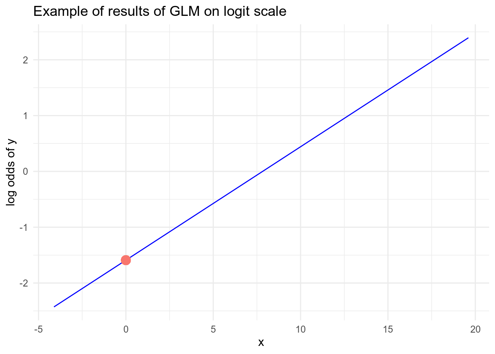
Parameters on the response scale
On the response scale, the response will be \(Y\), which is a probability of success (e.g. survival, presence etc).
\(\alpha\), the intercept
To find the expected value of \(Y\) when \(X = 0\). You need to convert the estimate of \(\alpha\) from the logit scale back to the response scale using the equation for the inverse of the logit link: e.g.
\[ p = \frac{1}{1+e^{-(\alpha)}} \]
This can be done in R.
# estimate of the intercept on logit scale (log odds of y)
coef(glm_model_object)[1](Intercept)
-1.590833 (Intercept)
0.1692667 \(\beta\), the slope
On the response scale the slope parameter has a somewhat different meaning. On the logit scale, the slope captured a linear relationship. However, on the response scale, the relationship between \(X\) and \(Y\) is not linear. As a result, the gradient of the model line will be different for different \(X\) values (see Figure 8.4).
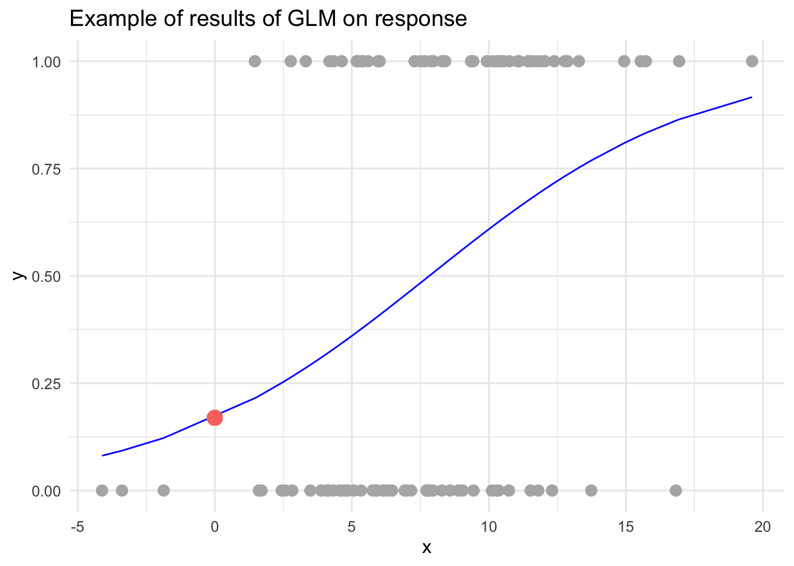
The estimate of the \(\beta\) coefficient on the logit scale, will tell you about the strength and direction of the relationship between \(X\) and \(Y\). This is the case even though this relationship will not be linear on the response scale.
To see the change in slope of the model line on the response scale you can predict values of \(Y\) on the response scale and either plot the relationship (like above in Figure 8.4) or simply look at the change between two \(X\) values.
e.g.
# predict log odds of Y when X = 2 or X = 3
# use a linear equation for this
odds_y_x2 <- coef(glm_model_object)[1] + (coef(glm_model_object)[2]*2)
odds_y_x3 <- coef(glm_model_object)[1] + (coef(glm_model_object)[2]*3)
# estimate of probability of success when X = 2
# take inverse of the logit link
prob_X2 <- 1/(1 + exp(-odds_y_x2))
# estimate of probability of success when X = 3
prob_X3 <- 1/(1 + exp(-odds_y_x3))
# slope from X = 2 to X = 3 on response scale
prob_X3 - prob_X2(Intercept)
0.03841184 If you were to repeat the example above for \(X\) = 10 and \(X\) = 11, you would not get the same slope on the response scale. Even though it is the same on the logit scale.
8.5.2 Worked example
In the previous section, we fit a Binomial GLM using the glm() function and looked at the estimates of some parameters using the coef() function. In this section, we will use the model theory to interpret what those parameters mean.
8.5.2.1 The intercept
For our sheep data model, the estimate of the intercept is:
coef(sheep_model)[1](Intercept)
-2.119708 This is the estimate of the log odds of survival for a sheep which has a body weight of 0 kg. The intercept estimate is a log odds of -2.1197077 of survival for a sheep that weighs 0 kg.
To get the probability of survival for a sheep with a body weight of 0 kg we need to convert these estimates to the response scale using the code below:
In other words, the survival probability of a sheep is 0.107196 when their weight is 0 kg.
In this example, the intercept is not very interesting, as it does not make a lot of biological sense to know the expected survival probability of sheep when their weight is 0 kg. A sheep born at anytime will weigh more than 0 kg.
8.5.2.2 The slope
The estimate of the slope of the relationship between body weight and survival probability is interesting to us since it can tell us the direction and the strength of the effect of body weight on survival of the sheep.
coef(sheep_model)[2] Weight
0.1817796 In this case, our model estimates that the log odds of the survival of the sheep increases by 0.1817796 when the weight of the sheep increases by 1 kg. This shows a positive relationship between body weight and survival probability.
To see what this effect looks like on the response scale, it is easiest to plot the results using predictions on the response scale (response scale). This is what we do below.
8.5.2.3 Plotting the Results
As well as looking at the maximum likelihood estimates of the parameters from the Binomial GLM, we can also plot the results. This is especially useful for interpreting the results on the response data scale.
To do this, we use the ggplot() with geom_line() and the predict() function.
To make the first plot, we will only need to use two arguments:
-
object= your model object -
type= “link”, which means predict on the link scale or “response”, which means predict on the response scale.
We will make predictions on both the link and response scale so that we can compare the results.
Once we have created predictions of \(Y\) from the model object, we can plot these using geom_line() as in the code below.
link <- ggplot(sheep_data, aes(x=Weight, y=predictions_link))+
geom_line(aes(y=predictions_link), colour = "blue")+
labs(x = "Weight (kg)", y = "Log Odds of Survival")
response <- ggplot(sheep_data, aes(x=Weight, y=Survival))+
geom_jitter(colour = "grey70", size = 2,
height = 0.05)+
geom_line(aes(y=predictions_response), colour = "blue")+
labs(x = "Weight (kg)", y ="Survival Probability")
link + response + plot_layout(nrow = 1)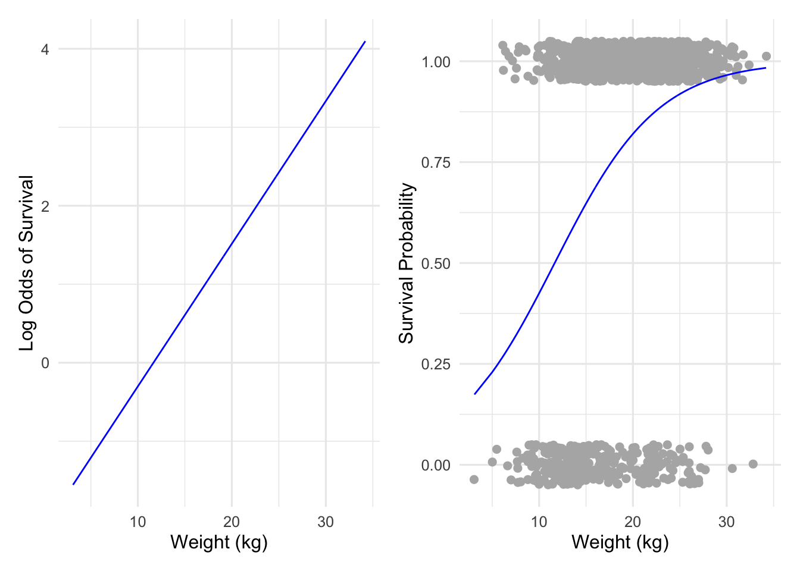
In the next section, we will look at how to add uncertainty to these plots and our interpretation.
8.6 Quantify uncertainty
8.6.1 Theory
As was discussed for linear models, statistics does not give a single correct answer. When we estimate the parameters in our statistical model, there will be many plausible parameters that could have produced our observed data. In these cases, some of the parameters will be more likely than the others to have generated the observed data.
The Binomial GLM is no exception. We will have to consider and present the uncertainty in the parameters we estimate.
The glm()function uses maximum likelihood estimation for the parameter estimation. Therefore, our consideration of uncertainty for these models are discussed here. We will therefore quantify uncertainty using standard errors, confidence intervals and prediction intervals which should be familiar to you but head to the uncertainty pages if you need a recap.
Just as with linear models there are two different types of uncertainty we will look at uncertainty in the model line of parameters \(\alpha\) and \(\beta\) and uncertainty in a prediction of \(Y\).
Uncertainty in the estimates of \(\alpha\) and \(\beta\)
To find the standard errors for the estimates of \(\alpha\) and \(\beta\) we can use summary() function. This takes the model object from the glm() as its argument. It outputs a big table with lots of information. The first line gives the formula used for the model object. The second line shows the summary of the residuals of the model and the standard errors are shown in the second column of the third part, Coefficients:.
summary(glm_model_object)
Call:
glm(formula = response ~ explanatory, family = binomial(link = "logit"),
data = your_data)
Deviance Residuals:
Min 1Q Median 3Q Max
-1.98905 -1.04140 0.00328 1.01222 1.75292
Coefficients:
Estimate Std. Error z value Pr(>|z|)
(Intercept) -1.59083 0.52309 -3.041 0.00236 **
explanatory 0.20329 0.06106 3.329 0.00087 ***
---
Signif. codes: 0 '***' 0.001 '**' 0.01 '*' 0.05 '.' 0.1 ' ' 1
(Dispersion parameter for binomial family taken to be 1)
Null deviance: 138.63 on 99 degrees of freedom
Residual deviance: 124.79 on 98 degrees of freedom
AIC: 128.79
Number of Fisher Scoring iterations: 4By taking the summary() of the example model, we can see the standard error of the intercept (\(\alpha\)) is 0.52, and the standard error for the slope (\(\beta\)) is 0.06.
We also observe that the standard error is smaller than the estimated effects. Actually, to indicate a clear direction of the effect, the standard error should be less than half the size of the estimated coefficient. This would ensure that 95% confidence intervals for the effect (see below) do not span 0.
Confidence intervals
For interpretation of the uncertainty, it can be easier to use the standard error to calculate confidence intervals. Confidence intervals indicate the range of plausible values for a parameter. They represent an interval, that if you were to collect a sample and run the analysis, then repeat that many many times AND each time draw a confidence interval, on average 95% of the time, the true population value of the parameter would be found in within the confidence interval.
To calculate a confidence interval from a standard error you need to use the formulas (this is exactly the same as for linear models):
\[ \begin{aligned} UpperCI = estimate + (1.96 SE) \\ LowerCI = estimate - (1.96 SE) \\ \end{aligned} \]
Remember that the estimates of the coefficients are for the effect of \(X\) on the log odds of \(Y\) (i.e. on the link scale). Therefore any measures of uncertainty are also on the link scale. After estimating the upper and lower confidence intervals of these parameters, it might be useful to convert them to the response scale to understand their effect. This is especially true for the intercept (\(\alpha\)).
Using the confint() function it is possible to display the 95% confidence intervals for the intercept and slope.
confint(glm_model_object) 2.5 % 97.5 %
(Intercept) -2.68608847 -0.6222264
explanatory 0.09118142 0.3320830Plotting uncertainty in \(\alpha\) and \(\beta\)
The above section has shown how you can quantify uncertainty in the line parameters of a Binomial GLM as numbers. But often in science, it is clearer to show these things visually.
We can add the confidence intervals to Figure 8.3 showing our GLM fitted line. This can be done either on the link scale or the response scale.
To do this, we need to generate new predictions with the predict() function. We also need to calculate the upper and lower confidence interval bounds using the standard error.
This is a little different to using predict() for a linear model object. For GLMs there are some different arguments. The key arguments are:
-
type. This argument can take values “link” (gives predictions on the link scale), “response” (gives predictions on the response scale) or “terms” (gives a matrix of the fitted values of each term in the model formula on the link scale). -
se.fit. This argument can beTRUEorFALSEand indicates whether the standard error for the prediction should be given in addition to the mean prediction. The standard error will be on the scale of the mean prediction i.e. either link scale or response dependent on whichtypewas specified.
The interval argument that was used for linear model objects to specify a prediction or a confidence interval does not work for predictions on a GLM object. Therefore, the standard errors presented are for a 95% confidence interval.
# First create the new data to predict for
# This example generates 100 values of the explanatory variable from min to max
newdata <- data.frame(explanatory = seq(min(example_data$explanatory),
max(example_data$explanatory),
length.out = 100))
# Then add predictions to the newdata for the link and response scale
# REMEMBER the confidence intervals too, you can access these by taking the
# $se.fit of the results of `predict`, $fit is the mean prediction
predictions <- newdata %>% mutate(predictions_link = predict(glm_model_object,
newdata = newdata,
type="link",
se.fit=TRUE)$fit,
SE_link = predict(glm_model_object,
newdata = newdata,
type="link",
se.fit=TRUE)$se.fit,
predictions_response = predict(glm_model_object,
newdata = newdata,
type="response", se.fit=TRUE)$fit,
SE_response = predict(glm_model_object,
newdata = newdata,
type="response",
se.fit=TRUE)$se.fit) %>%
as_tibble()
predictions# A tibble: 100 × 5
explanatory predictions_link SE_link predictions_response SE_response
<dbl> <dbl> <dbl> <dbl> <dbl>
1 -4.12 -2.43 0.759 0.0811 0.0566
2 -3.88 -2.38 0.745 0.0848 0.0578
3 -3.64 -2.33 0.731 0.0887 0.0591
4 -3.40 -2.28 0.717 0.0927 0.0603
5 -3.16 -2.23 0.703 0.0968 0.0615
6 -2.92 -2.18 0.690 0.101 0.0627
7 -2.68 -2.14 0.676 0.106 0.0639
8 -2.44 -2.09 0.662 0.110 0.0650
9 -2.20 -2.04 0.648 0.115 0.0661
10 -1.96 -1.99 0.634 0.120 0.0671
# … with 90 more rowsYou should notice that all predictions on the response scale around bounded between 0 and 1, but this is not the case on the link scale.
Then you can plot these. Remember these are confidence intervals not prediction intervals. The predict function will not give prediction intervals for a GLM. In fact, it is not always an easy or sensible thing to create in this context, especially for a Binomial GLM. When the mean prediction is close to 0 or 1, the prediction interval can easily fill the whole possible value space (i.e. span from 0 right to 1), which is not very logical and is hard to interpret.
To get the upper and lower bounds of the confidence interval from a GLM using predict() you need to calculate the bounds yourself. You need to add or subtract 1.96 times the standard error from the mean prediction.
predictions <- predictions %>% mutate(upper_ci_link = predictions_link + (2*SE_link),
lower_ci_link = predictions_link - (2*SE_link),
upper_ci_response = predictions_response + (2*SE_response),
lower_ci_response = predictions_response - (2*SE_response))
# plot predictions on the link scale
example_predictions_link <- ggplot(data = predictions,
aes(x = explanatory,
y = predictions_link))+
geom_line(color="blue")+
geom_ribbon(aes(ymin = lower_ci_link,
ymax = upper_ci_link),
alpha = 0.5)+
labs(title = "A. Predictions on link scale",
y = "Log odds of response",
x = "Explanatory")
# For this plot, the base can be the response data
example_predictions_response <- ggplot() +
geom_jitter(data = example_data,
aes(x = explanatory, y = response),
colour = "grey", size = 2, height = 0.01) +
geom_ribbon(data = predictions,
aes(x = explanatory,
ymin = lower_ci_response,
ymax = upper_ci_response),
alpha = 0.5) +
geom_line(data = predictions,
aes(x = explanatory, y = predictions_response),
colour = "blue") +
labs(title = "B. Predictions on response scale",
y = "Probability",
x = "Explanatory")
example_predictions_link + example_predictions_response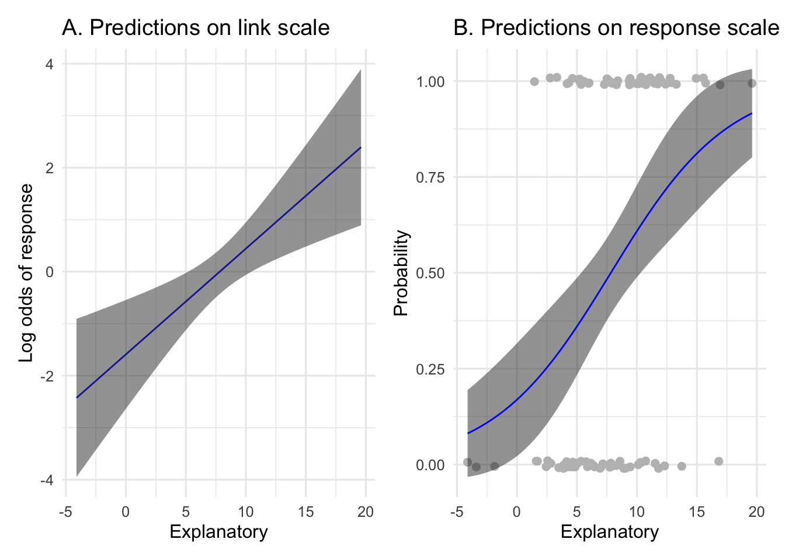
8.6.2 Worked example
At the end of the last section, we created of our sheep model and looked at the estimated model line. Now we will add uncertainty to that plot.
First, we should look at the confidence intervals of our parameter estimates.
The confidence interval has been rounded to two decimal places to make it easier to read.
To add these intervals to the plot, we need to make new predictions including the upper and lower bounds of the prediction interval. We will do this on the link scale and the response response scale.
# first make some new data to predict for
newdata <- data.frame(Weight = seq(min(sheep_data$Weight),
max(sheep_data$Weight),
length.out = 100))
sheep_predictions <- newdata %>%
mutate(predictions_link = predict(sheep_model,
newdata,
type="link",
se.fit = TRUE)$fit,
# the next lines add the lower and upper ci bounds
lower_ci_link = predict(sheep_model,
newdata,
type="link",
se.fit = TRUE)$fit -
(1.96*predict(sheep_model,
newdata,
type="link",
se.fit = TRUE)$se.fit),
upper_ci_link = predict(sheep_model,
newdata,
type="link",
se.fit = TRUE)$fit +
(1.96*predict(sheep_model,
newdata,
type="link",
se.fit = TRUE)$se.fit),
# then predict on the response scale
predictions_response = predict(sheep_model,
newdata,
type="response",
se.fit = TRUE)$fit,
# and add the confidence interval bounds
lower_ci_response = predict(sheep_model,
newdata,
type="response",
se.fit = TRUE)$fit -
(1.96*predict(sheep_model,
newdata,
type="response",
se.fit = TRUE)$se.fit),
upper_ci_response = predict(sheep_model,
newdata,
type="response",
se.fit = TRUE)$fit +
(1.96*predict(sheep_model,
newdata,
type="response",
se.fit = TRUE)$se.fit))Once we have created predictions of \(Y\) from the model object, we can plot them using geom_line() and geom_ribbon() as in the code below.
# Plot of Confidence Intervals on the link scale
sheep_predictions_link <- ggplot(data = sheep_predictions,
aes(x = Weight,
y = predictions_link))+
geom_line(color="blue")+
geom_ribbon(aes(ymin = lower_ci_link,
ymax = upper_ci_link),
alpha = 0.5)+
labs(title = "A. Predictions on link scale",
y = "Log odds of survival",
x = "Body weight (kg)")
# For this plot, the base can be the response data
sheep_predictions_response <- ggplot() +
geom_jitter(data = sheep_data,
aes(x = Weight, y = Survival),
colour = "grey", size = 2, height = 0.01) +
geom_ribbon(data = sheep_predictions,
aes(x = Weight,
ymin = lower_ci_response,
ymax = upper_ci_response),
alpha = 0.5) +
geom_line(data = sheep_predictions,
aes(x = Weight, y = predictions_response),
colour = "blue") +
labs(title = "B. Predictions on response scale",
y = "Probability of survival",
x = "Body weight (kg)")
sheep_predictions_link + sheep_predictions_response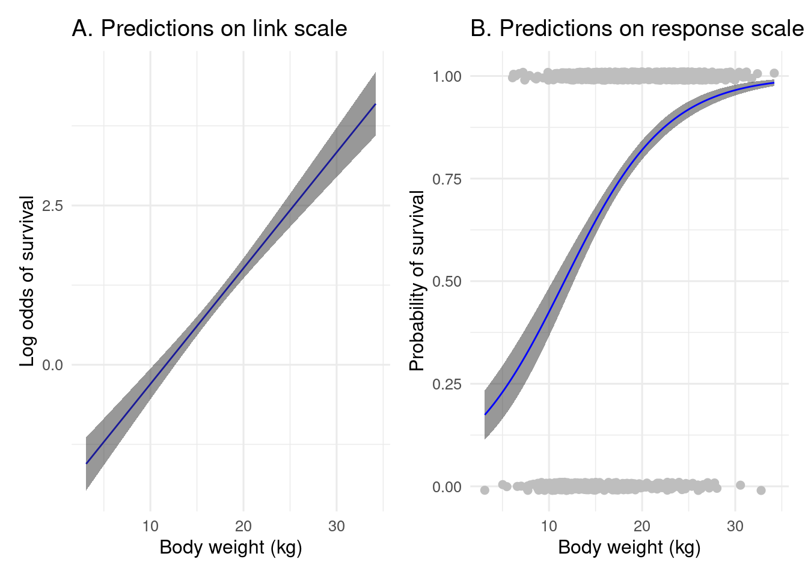
It can be observed from the figure above that the confidence intervals for the predictions around \(1\) are very narrower. This means that as we get closer to the true classification (0 or 1), we are able to estimate them with much certainty.
8.7 Model checking
8.7.1 Theory
Until this point, we have run a Binomial GLM, got parameter estimates and quantified uncertainty. Next, we will look at how to know if the model is any good. To do this, we need to check if the assumptions for a Binomial GLM are met for our data.
To check the assumptions of a Binomial GLM, we will follow the same procedure as for GLMs more broadly. For a reminder of this, go back to the Introduction to GLMs page.
The first step is to:
Plot the model predictions and the data together
From this plot, it is possible to test:
- that the fitted model line is capturing the relationship between x and y on the response scale
To do this, we can re-plot the example plot from the section above.
example_predictions_response +
labs(title = "Model predictions and data on response scale")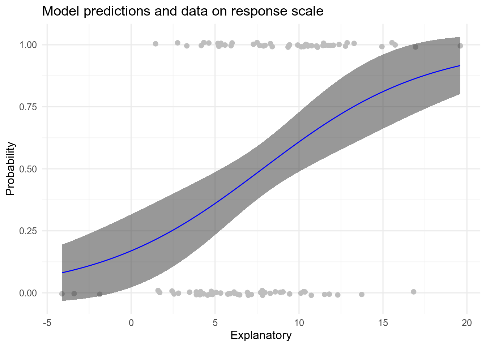
If you look carefully at Figure 8.8 you can see that there are more data points that are 0 for the response for negative values of the explanatory variable. As the values of the explanatory variable increase, we find progressively more 1 values for the response. Therefore, we would expect a model line that that an intercept of close to 0 on the response scale and then shows a positive relationship between x and y, reaching an asymptote (levelling off) at a response value of 1 at the extreme end of the observed values of the explanatory variable (around 20). This is exactly what the fitted model line does! Therefore, in this case, it is possible to see that the model fits the data quite well.
Note that if you had proportional data or those from multiple trials that the data points might be distributed around the fitted line.
Then it would be possible to also test:
- whether the data points are evenly distributed around the fitted line
ggplot(aes(x = explanatory, y = successes/(successes + failures)),
data = example_data2)+
geom_point(shape = 16)+
geom_smooth(method=stats::glm, method.args = list(family="binomial"),
se=TRUE)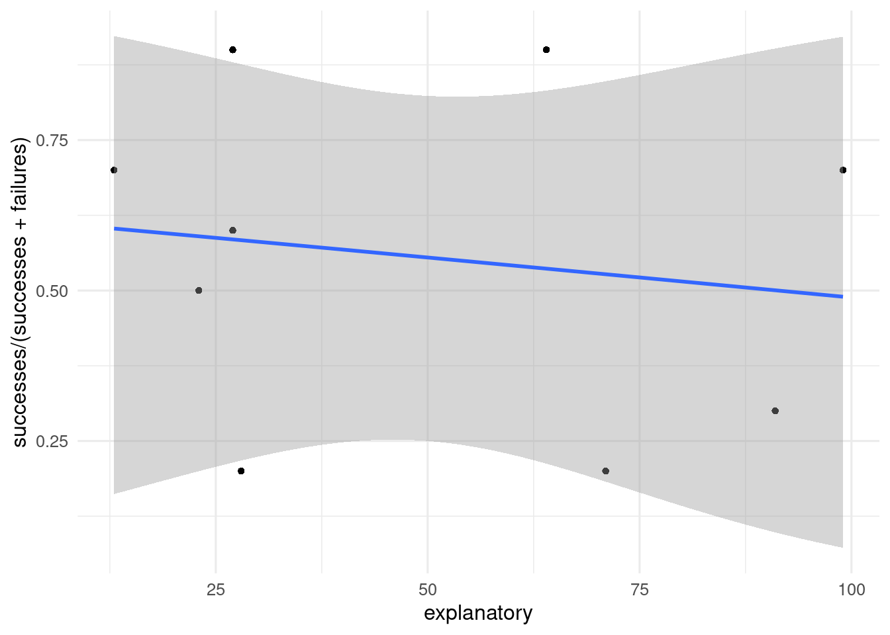
In this example, the fit is much worse. Although there are an even number of data points above and below the fitted model line, they are very widely spread away from it. The model line does not seem to be explaining the data well, that is partly because there is so little data (only 10 data points). But hopefully shows what a less well fitting model looks like.
The second step for checking model assumptions is:
Overdispersion
Checking for overdispersion tests if these assumptions are met:
Correct variance function is used
Dispersion parameter is constant
In a Binomial GLM it is assumed that the variance is controlled by the mean. But this is not always true. It is something we need to check as part of the model checking process.
To check for overdispersion in GLMs we need to calculate the deviance ratio. This is done by taking the ratio of residual deviance and residual degrees of freedom.
The assumption is that the deviance = 1 for Binomial GLMs. Values higher than 2 indicates that the residuals likely have more dispersion than expected. But there is no fixed threshold for when overdispersion is occurring, each researcher has to decide on their own how high a deviance ratio is a problem.
The deviance values are found in summary() at the bottom of the table
summary(glm_model_object)
Call:
glm(formula = response ~ explanatory, family = binomial(link = "logit"),
data = your_data)
Deviance Residuals:
Min 1Q Median 3Q Max
-1.98905 -1.04140 0.00328 1.01222 1.75292
Coefficients:
Estimate Std. Error z value Pr(>|z|)
(Intercept) -1.59083 0.52309 -3.041 0.00236 **
explanatory 0.20329 0.06106 3.329 0.00087 ***
---
Signif. codes: 0 '***' 0.001 '**' 0.01 '*' 0.05 '.' 0.1 ' ' 1
(Dispersion parameter for binomial family taken to be 1)
Null deviance: 138.63 on 99 degrees of freedom
Residual deviance: 124.79 on 98 degrees of freedom
AIC: 128.79
Number of Fisher Scoring iterations: 4For the example above the Deviance ratio = 124.79/98 = 1.2733673.
This value is a bit above 1, but much lower than 2, so the dispersion assumption seems to be met in the example.
8.7.2 Worked example
Using the theory covered in the previous section, we can now check our sheepModel to ensure that it meets the assumptions of a Binomial GLM.
First, we will look again at the plot of the model predictions and the data together.
sheep_predictions_response +
labs(title = "Model predictions on response scale")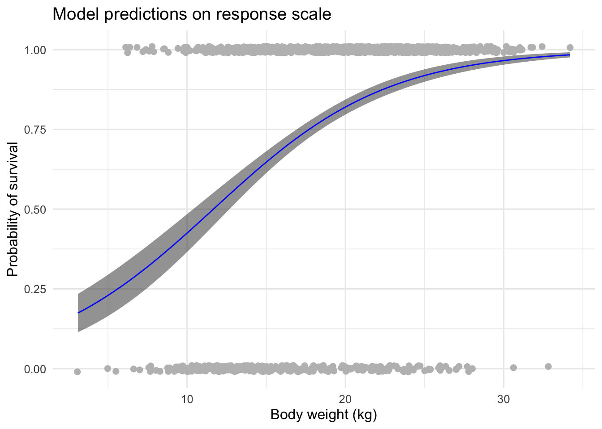
The fit of this model is perhaps a little harder than the example in the theory section. This is partly caused because there is more data, so it overlaps a lot.
ggplot() +
geom_jitter(data = sheep_data,
aes(x = Weight, y = Survival),
colour = "grey70", size = 2, height = 0.1) +
geom_ribbon(data = sheep_predictions,
aes(x = Weight,
ymin = lower_ci_response,
ymax = upper_ci_response),
alpha = 0.5) +
geom_line(data = sheep_predictions,
aes(x = Weight, y = predictions_response),
colour = "blue") +
labs(title = "Model predictions on response scale",
y = "Probability of survival",
x = "Body weight (kg)")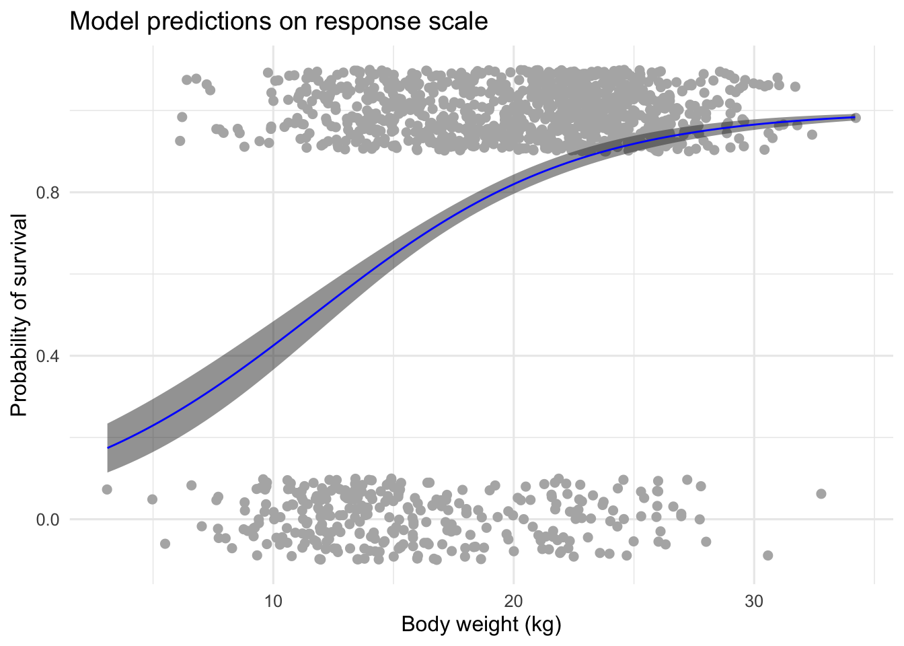
If we increase the jitter of the points from 0.01 to 0.1, it becomes a bit easier to see the pattern. Now it is possible to see there are many more data points with a response value of 1, than there are data points with a response value of 0. There are especially few response values of 0 (death) for sheep with a body weight above 25kg. Very few of these big sheep die.
So, we would expect a model line to fit well, if it captures small sheep having a lower survival change than big sheep. It seems that the model does capture the data quite well in this case.
Next, we should check overdispersion.
summary(sheep_model)
Call:
glm(formula = Survival ~ Weight, family = binomial(link = "logit"),
data = sheep_data)
Deviance Residuals:
Min 1Q Median 3Q Max
-2.7799 0.2793 0.4854 0.7191 1.6256
Coefficients:
Estimate Std. Error z value Pr(>|z|)
(Intercept) -2.11971 0.25498 -8.313 <2e-16 ***
Weight 0.18178 0.01434 12.680 <2e-16 ***
---
Signif. codes: 0 '***' 0.001 '**' 0.01 '*' 0.05 '.' 0.1 ' ' 1
(Dispersion parameter for binomial family taken to be 1)
Null deviance: 1445.6 on 1327 degrees of freedom
Residual deviance: 1251.5 on 1326 degrees of freedom
AIC: 1255.5
Number of Fisher Scoring iterations: 4The deviance ratio for the sheep model is:
1251.5/1326 = 0.943816.
This is actually slightly below the expected dispersion of 1, but it is pretty close. So, it seems the dispersion assumption is met for the sheep model.
In the next section we will interpret our results.
8.8 Draw conclusions
8.8.1 Theory
In the previous sections you learned how to run a Binomial GLM, what the parameters of the model mean, how to quantify uncertainty in the parameters, and how to check the assumptions of the model. Now, we can bring everything together to draw some conclusions.
There are several components required in drawing a conclusion:
- statement of the maximum likelihood estimate of the parameters of interest (including strength and direction).
- statement of the uncertainty in the estimate
- link the results to biology and the question asked
- Discussion of next directions
8.8.2 Worked example
This is the final section of our analysis of the data on survival of sheep. We will now bring together all of the results we have obtained and draw a conclusion following the same format as the in the theory section.
A reminder, we were asking: Does weight influence survival of Soay sheep?
The maximum likelihood estimate of the relationship between weight and survival probability is 0.1817796. In other words, for every 1 kg increase in body weight, the log-odds of the survival of the sheep increases by 0.18.
On the response scale this increase is non-linear and is better shown with a graph.
sheep_predictions_response +
labs(title = "Model predictions on response scale")Here it is clearer to see the increase in survival probability with body weight. The increase in survival is steepest for smaller sheep, levelling off after around 25kg at a 0.95 probability of survival in a given year for these big sheep.
When we look at the uncertainty in this estimate, we see the 95% confidence interval is 0.15, 0.21. The confidence interval limits are same sign, meaning that 0 is not included as a plausible value for the strength of the relationship. Therefore, we can conclude that weight has seems to have a positive impact on the survival of sheep.
In model checking, all the assumptions of the Binomial GLMs were met. The model was not overdispersed, the data are Binomial (coming from single trials) and the fitted model line captured the pattern of the data well.
It should be noted that there is also data on Age in the Soay sheep dataset. It is reasonable to assume that Age and Body weight have some relationship. Older sheep are likely to be bigger than new lambs. Therefore, it might be good to also include Age in the model possibly conducting model selection to decide if this variable is needed.
What’s next?
- Poisson Generalized linear models for analyses when your response variable is not normally distributed.
Further reading
Contributors
- Kwaku Peprah Adjei (lead)
- Emily G. Simmonds
- Bob O’Hara